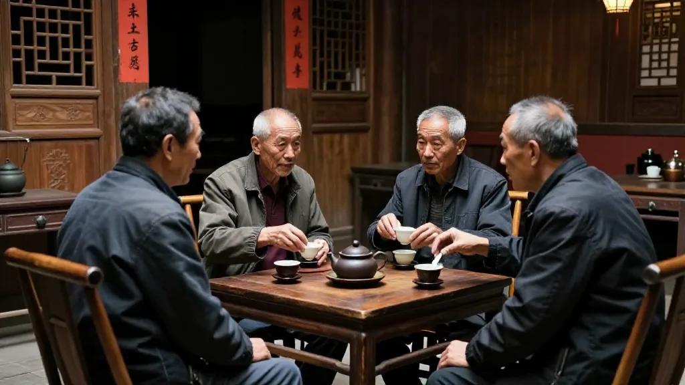

【鄭哥點評】欄目：鄭哥博客點評｜日期：2026-09-27｜關鍵詞：汕尾、潮汕民系、疍民、歐洲教授、歷史發現、鄭哥Hany
第一幕：汕尾有班人叫「疍民」，歐洲學者嚟研究
汕尾有班人，叫「疍民」。
我係汕尾後生個陣，間中聽老一輩提起，但係從來冇深入了解。直到我睇到呢條新聞——歐洲學者專程去汕尾研究呢個族群，揭開一啲驚人發現。
汕尾的疍民研究長期被忽略。翁烈輝先生寫咗本《南海雄風——汕尾疍民歷史文化研究》，被譽為「疍民百科全書」，獲得潮學優秀成果獎。
呢個說明咩？說明汕尾疍民呢個題目，外國學者認為係有研究價值嘅。
圖片由 AI輔助創作（Z-Image-Turbo）
第二幕：潮汕人從邊度嚟？——中原南遷的後代
汕頭大學醫學院研究發現一個有趣結論：河南太行山人主要由北方漢族主要單倍群構成，廣府和客家人則以南方原住民族主要單倍群為主，潮汕人表現為北方漢族主要單倍群稍高於南方原住民族主要單倍群。
翻譯：三大民系（潮汕、廣府、客家）入面，只有潮汕人的中原漢族血統最為「正」，與河南太行山人群的關係最近。
呢個係分子生物學研究結果，唔係邊個靠想象。
饒宗頤教授喺《福老》篇論述：「就其來自河南而言，則曰河老，就其處於福建而言，則名為福老。」——潮汕人祖先從中原南遷，主要嚟自河南一帶，輾轉經過福建莆田、漳州、泉州，再入粵東。

圖片由 AI輔助創作（Z-Image-Turbo）
第三幕：「裙屐翩翩似晉人」——潮汕人係晉代風度的傳人
清初詩人孟亮揆寫過一句：「怪他風俗由來異，裙屐翩翩似晉人。」呢句詩形容潮汕人的穿著打扮、風俗習慣，與中原晉代人相似。
徐乾學《潮州雜興》亦話：「無分晴雨穿高屐，豈是風流學晉人。」
晉代有所謂「魏晉風度」，以褒衣博帶、高跟木屐聞名。最著名係謝靈運用於登山的「謝公屐」。而潮汕人歷史上確實有愛穿屐的傳統。劉恂《嶺表錄異》記載：「袍木產江溪中...今潮、循人多用其根，剜而為屐。」呢個傳統延續至改革開放後先至逐漸消失。

圖片由 AI輔助創作（Z-Image-Turbo）
第四幕：潮汕人的DNA，說明乜嘢？
呢個研究結論指向一個更深層的問題：潮汕人南遷之後，與當地原住民（百越族、俚人、僚人）融合得最少。
對比吓就知道：廣府人、客家人——與南方原住民族群（壯族、黎族）有較大血緣關聯；潮汕人——與中原漢族血緣最近，與原住民融合痕跡較少。
饒宗頤的分析話：「漳潮尚自稱曰河老」，而河老唔係河南，而係河東——黃河河套以東的山西。
簡單嚟講：潮汕人係一批比較「忠於原著」的中原漢族後代，佢哋南遷之後保留咗更多中原文化特色，包括語言、風俗、飲食習慣。
圖片由 AI輔助創作（Z-Image-Turbo）
第五幕：疍民——被忽略的海洋族群
汕尾疍民係另一個被長期忽略的題目。翁烈輝研究指出：「汕尾疍民是一個『特別』的族群，其向海洋拓展活動空間的勇敢行為，是值得研究的重要課題。」
歷史上，珠三角和汕尾一帶的疍民長期被陸地上的人視為「另類」——佢哋居於船上，以海為生，唔係耕讀傳家的傳統漢族。但係呢個族群其實係中國最早走向海洋的群體之一。
鄭哥三句話
第一句：我哋潮汕人，係中原南遷的「正版」後代。 分子生物學話我哋聽：潮汕人的北方漢族血統，係三大民系入面最「正」的。呢個唔係話我哋幾高尚，而係話我哋攜帶的文化基因——包括語言、習俗、飲食——的確係從中原一脈相承。
第二句：「裙屐翩翩似晉人」——我哋的穿著傳統，係魏晉風度的延續。 清代詩人見到潮汕人的風俗，話似晉人。呢個說明我哋文化血統的深度——唔係一兩代，而係成個文化系統的完整性。
第三句：汕尾疍民代表另一種可能被忽略的歷史。 當大家都關注潮汕商人、潮汕文化嘅時候，汕尾疍民——呢班向海洋讨生活的群體——長期係學術研究的盲區。外國學者嚟研究，話明呢個題目有國際學術價值。
歐洲學者去汕尾研究民系，揭開的不只係一段被忽略的歷史——潮汕人的血統與文化傳承，比我哋自己以為的更深、更遠。分子生物學話我哋聽：潮汕人係中原南遷之後，保留得最完整的一支漢族後代。
合作聯繫
WhatsApp（香港）：+852 6641 7912
WhatsApp（美國）：+1 (562) 550-9968
合作事項：電子消費品跨境貿易 / AI 算力服務 / 陳皮茶葉批發 / 跨境電商諮詢
電郵：glomarket500@gmail.com
香港地址：旺角花園街 183 號
美國地址：ALEXBI INC, LONG BEACH, CA